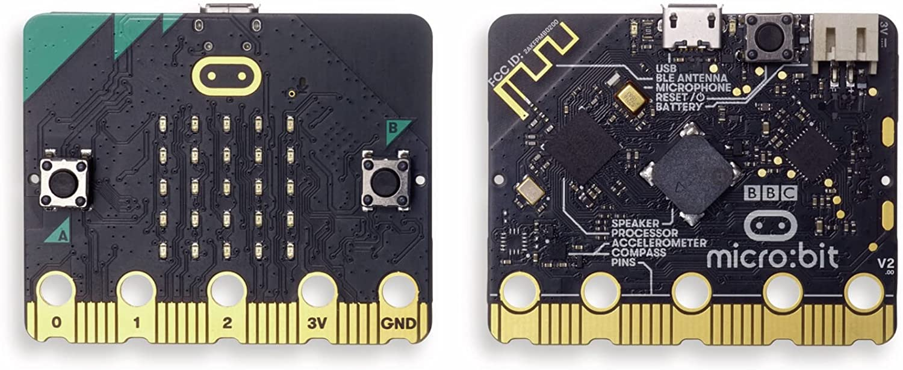
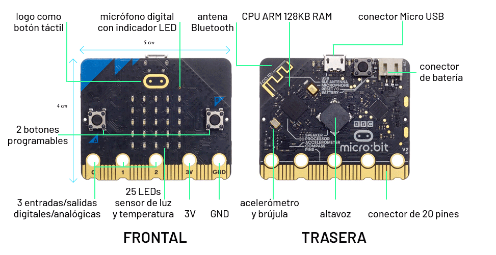

Micro:bit es una pequeña placa diseñada por la BBC para aprender robótica en escuelas, es fácil de conectar y programar y tiene varios sensores incorporados.

En la siguiente imagen se pueden apreciar las partes de la placa micro:bit por ambas caras:

La placa micro:bit es muy versátil, ya que podemos programarla desde un ordenador (sin importar el sistema operativo) o desde una tablet o teléfono móvil.
Si vamos a utilizar el ordenador, necesitaremos un cable USB para conectarlo a la placa. Cuando conectas la placa, aparecerá en el ordenador como una memoria USB llamada MICROBIT.
Cuando creamos un programa, podemos descargar el archivo del programa al ordenador y posteriormente, copiarlo a la unidad MICROBIT, lo que hará que se empiece a ejecutar en la Micro:Bit.